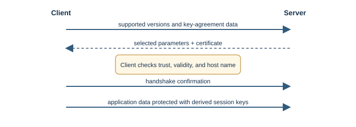
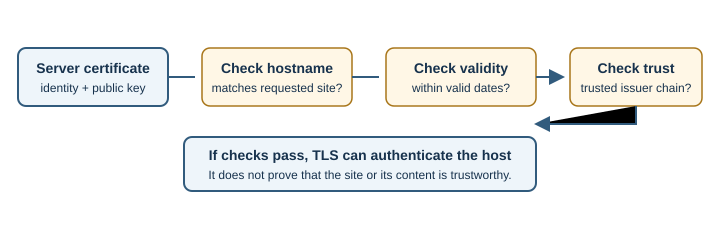
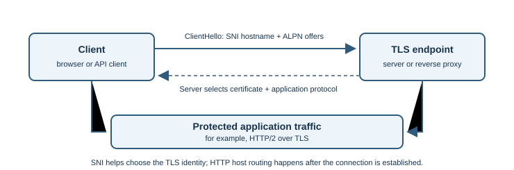

TLS and SSL¶
Introduction¶
Transport Layer Security (TLS) protects data exchanged between endpoints. It is designed to provide confidentiality, integrity, and authentication. HTTPS is HTTP carried over TLS. Secure Sockets Layer (SSL) is the obsolete predecessor; current systems should use modern TLS, not SSL.
Why does it exist?¶
Network traffic can cross equipment and networks neither endpoint controls. Without protection, an intermediary could read or alter data, or a client could be tricked into connecting to an impostor. TLS helps protect the connection in transit.
How does it work?¶
In a simplified TLS 1.3 connection:
- The client offers supported TLS versions and cryptographic parameters.
- Client and server exchange key-agreement data and derive shared session keys.
- The server presents a certificate. The client checks that it is trusted, valid, and matches the requested host name.
- The endpoints confirm the handshake and protect application records with the derived keys.
- HTTP data travels inside the protected connection.



Certificates are signed statements that bind a public key to one or more names. A browser checks the certificate chain against trusted certificate authorities and verifies the requested name. Ordinary web browsing typically authenticates the server; client certificates can also be used when mutual authentication is required.
Public-key and symmetric cryptography¶
Public-key cryptography helps establish shared secrets and verify signatures without sending the eventual session key as plain text. After the handshake, TLS uses symmetric session keys to protect application data efficiently. Modern TLS also uses authenticated encryption so the receiver can detect tampering. The protocol and library manage these details; application developers should not invent their own key exchange.
Certificate checking is a chain of specific questions:
- Is the certificate within its validity period?
- Does it identify the host name the browser requested?
- Does its signature chain lead to a certificate authority the client trusts?
- Has the client been configured with any additional trust or revocation checks?
Passing these checks means the connection is authenticated according to the client's trust model. It does not certify the site's intent or content.
TLS with domains, proxies, and HTTP¶
One IP address can host multiple HTTPS domains. The client commonly sends the requested hostname using Server Name Indication (SNI) during the TLS handshake so the server or TLS-terminating proxy can select an appropriate certificate. After TLS is established, HTTP also carries the request host name for routing. SNI helps select the TLS identity; it does not replace HTTP host routing or application authorization.
Application-Layer Protocol Negotiation (ALPN) lets the endpoints negotiate an application protocol, such as HTTP/1.1 or HTTP/2, as part of TLS setup. HTTP/3 uses QUIC and negotiates through QUIC's TLS handshake.
In many deployments, a load balancer or reverse proxy terminates public TLS and then forwards traffic to an application service. The operator must secure and control the proxy-to-service path too. TLS at the public edge does not automatically encrypt every internal hop.
Common TLS failures a developer may see¶
| Symptom | Possible cause to check |
|---|---|
| Hostname mismatch | Certificate does not cover the requested domain or proxy serves the wrong virtual host |
| Expired or not-yet-valid certificate | Renewal, deployment, or device clock problem |
| Untrusted issuer | Missing or incorrect certificate chain, or an unexpected local trust configuration |
| Certificate works for one domain but not another | SNI, certificate selection, or domain configuration problem |
| Secure page reports mixed content | Page loads a resource over insecure HTTP |
| Connection fails only on one network | Proxy inspection, firewall, unsupported configuration, or network policy; diagnose without disabling certificate validation |
Do not make a client ignore certificate errors as a production fix. Verify the domain, certificate chain, server clock, and proxy configuration.
Real-world example¶
When signing in to an online service, the browser checks the service's certificate, establishes TLS, and sends the login request through the encrypted connection. TLS protects the data in transit but cannot protect a compromised browser or server.
Developer perspective¶
Use maintained TLS libraries and secure defaults; do not write custom cryptography or disable certificate checks to silence an error. Keep certificates valid and host names correct. Remember that TLS does not hide all connection metadata, prevent phishing, or make application logic secure. See HTTP and HTTPS and SSL certificates. For full-stack deployments, also check whether TLS terminates at the CDN, load balancer, reverse proxy, or application server, and document how each subsequent hop is protected.
Practical example¶
curl -I https://example.com/ requests a response over TLS. If OpenSSL is
installed, openssl s_client -connect example.com:443 -servername example.com
displays connection and certificate details. These commands connect to the
specified host; do not send credentials or private data in a diagnostic test.
Important terminology¶
- Handshake: initial negotiation and authentication exchange.
- Certificate: signed information binding a public key to one or more identities.
- Certificate authority (CA): an issuer trusted to sign certificates.
- Session key: a temporary symmetric key used to protect data.
- Integrity: assurance that protected data has not been silently altered.
- Public key: a key that can be shared and used for operations such as signature verification.
- Symmetric encryption: encryption that uses a shared secret key for protecting data.
- Certificate chain: linked certificates used to establish trust from a server certificate to a configured trust anchor.
Advantages and disadvantages¶
TLS reduces eavesdropping and tampering and helps authenticate the server. It requires correct configuration and certificate maintenance. A valid connection cannot protect data after it reaches a compromised endpoint.
Common misconceptions¶
- The browser padlock signals a protected connection, not an honest business.
- SSL is not the current protocol to enable; modern deployments use TLS.
- Encryption does not prevent phishing, malware, or unsafe application code.
Further Learning & References¶
- Official documentation — MDN (beginner-friendly): Transport Layer Security (TLS) explains TLS, certificates, and their role in web security.
- Official standard — RFC Editor: RFC 8446, The Transport Layer Security (TLS) Protocol Version 1.3 specifies TLS 1.3 handshakes and record protection.